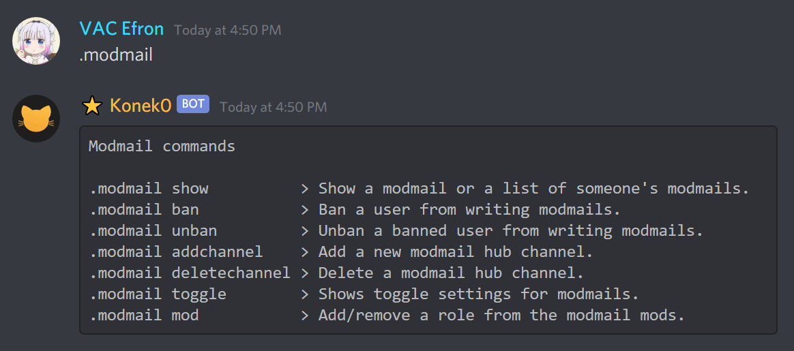
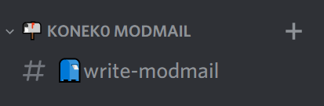
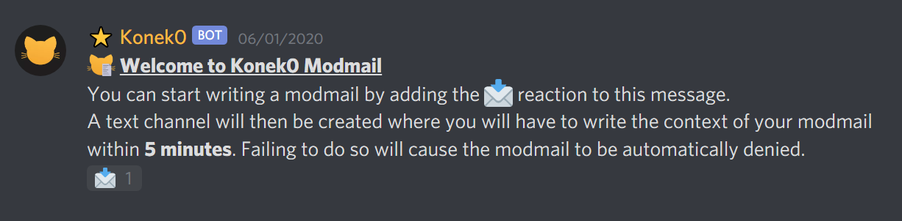
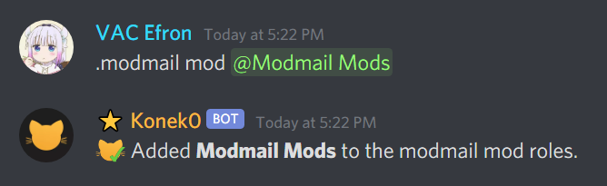
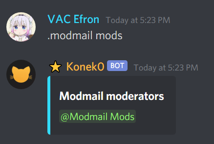
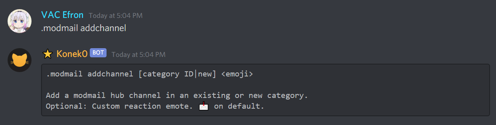
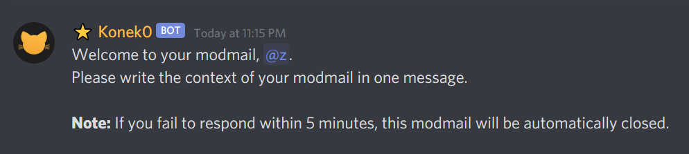
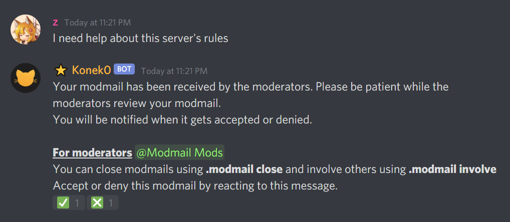
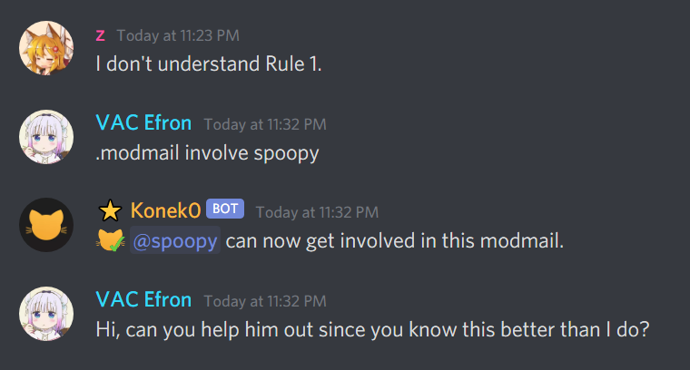
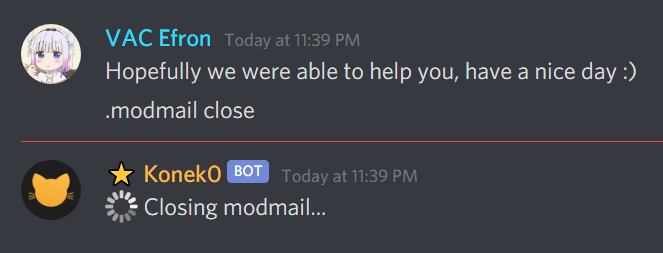

How to set up modmail
This guide will cover how to set up modmail for your server using commands.
Modmails are channels that users can create by adding a simple reaction.
You and your moderators can review them and talk to the users in private.
Overview
You can use .modmail to see all modmail commands or at the commands page.

Modmail hubs are the channels users visit to open modmails.


1) Adding modmail moderators
Modmail moderators are the users who will handle all the modmails. They can see, claim and deny incoming modmails.
1. Use .modmail mod and specify a role.

Use .modmail mod @role again to remove the role from the list.
2. See all modmail moderator roles using .modmail mods.

2) Creating a modmail hub
1. Use .modmail addchannel and type the arguments.

Example: .modmail addchannel new :Emoji: will create a modmail hub with a new category like this.
Leaving <emoji> blank will use the default emoji (📩). The emoji is used as a reaction for users to open a modmail with.
Result:
3) Inside modmails
When a modmail is created by a user, they will be prompted with a message that tells them to write the context of their modmail.

After they write the context, they will have to wait until a modmail moderator accepts or denies their modmail.
They will not be able to send messages until it's accepted.

From here, a moderator can click the checkmark to accept the modmail and take responsibility, or click the crossmark to deny the modmail and delete it (the user will be notified in DMs).
When you accept a modmail, only you and the user will be able to read the channel.

You can involve other users/moderators if needed using .modmail involve. This will grant them access to read the channel.

After you're finished, use .modmail close to close the modmail.

If you enabled webpage generation, Konek0 will create a nice webpage to show your conversation as well.